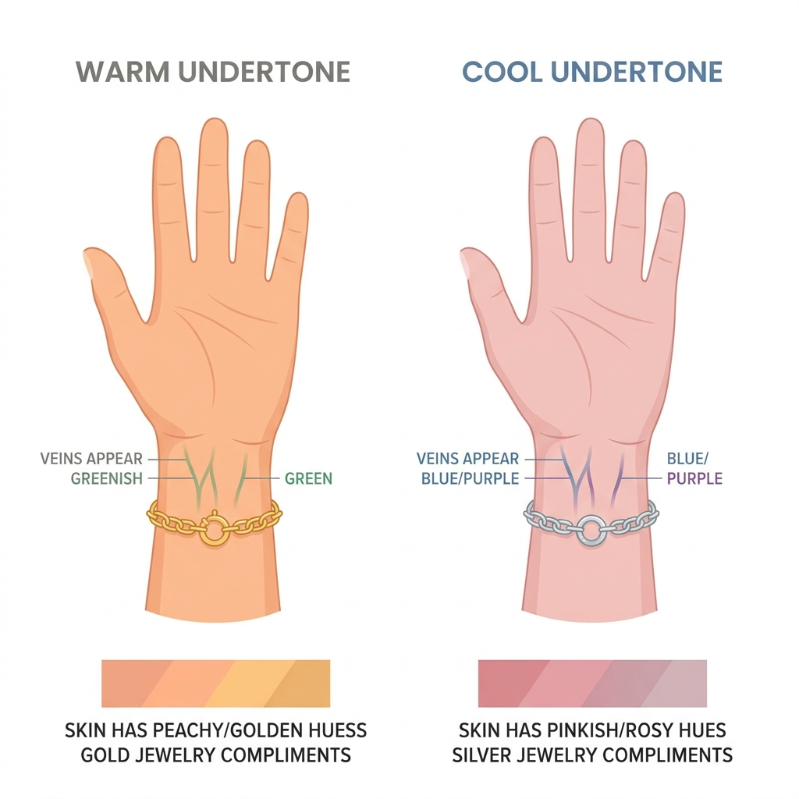
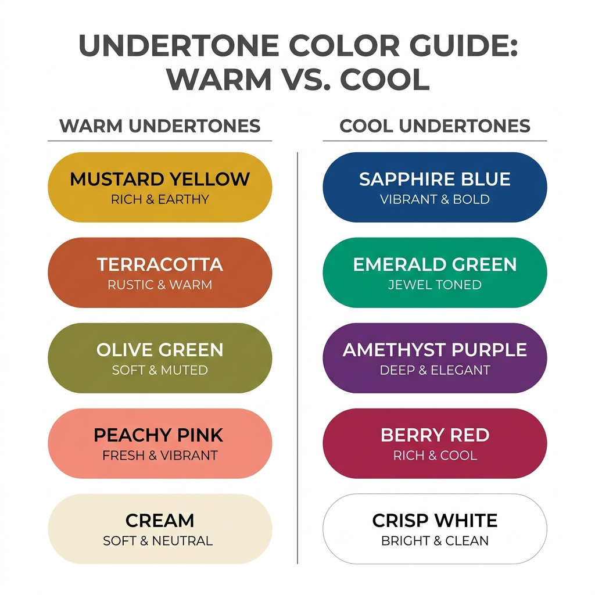
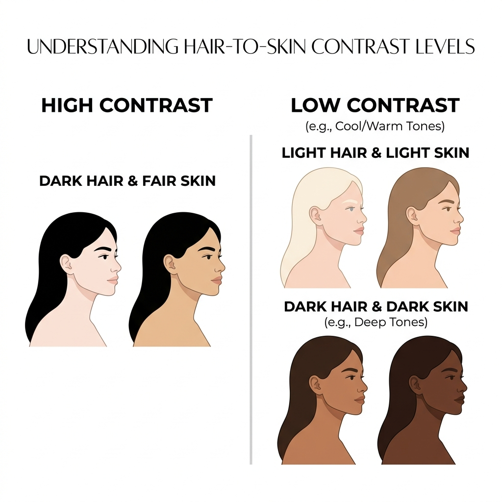

How to Choose the Right Colour Outfit for Your Face
Last updated: July 14, 2026
Ever tried on two outfits in nearly the same shade — and one made you look tired while the other made you glow? That's not your imagination. It's colour science.
Every skin tone has an undertone, and certain colours either work with it or fight against it. Get this right, and you'll look brighter, healthier, and more put-together — often without spending a rupee more than you already do.
Here's how to figure out which colours actually suit you.
Step 1: Find Your Undertone
Your undertone is the subtle colour beneath your skin — separate from how light or dark your skin is. Most people fall into one of three categories:
- Warm undertone — skin has golden, peachy, or yellow hints
- Cool undertone — skin has pink, red, or blue hints
- Neutral undertone — a mix of both, with no strong pull either way
Two quick tests you can do right now:
The vein test. Look at the veins on the inside of your wrist in natural light.
- Greenish veins → you're likely warm
- Bluish/purple veins → you're likely cool
- Can't tell, or a bit of both → you're likely neutral
The jewellery test. Hold gold jewellery and silver jewellery near your face.
- Gold looks more flattering → warm
- Silver looks more flattering → cool
- Both look equally good → neutral
If your two tests disagree, don't worry — a lot of people are neutral or lean only slightly one way. That's completely normal, and neutral undertones actually have the most flexibility with colour.

Step 2: Match Colours to Your Undertone
Once you know your undertone, picking colours gets much easier.
If you're warm-toned, lean into:
- Mustard, rust, and terracotta
- Olive and warm greens
- Coral, peach, and warm reds
- Cream and ivory instead of stark white
- Gold-toned accessories
If you're cool-toned, lean into:
- Jewel tones — sapphire blue, emerald, amethyst
- True reds and berry pinks
- Charcoal grey instead of black-brown mixes
- Crisp white
- Silver-toned accessories
If you're neutral-toned, you have the widest range:
- Most colours will work, but muted, "in-between" shades — dusty rose, sage, soft navy — tend to suit you especially well
- You can borrow confidently from both the warm and cool lists above

Step 3: Think About Contrast, Not Just Colour
Undertone tells you which colours suit you. Contrast tells you how bold those colours should be.
- If there's a big difference between your hair colour and skin tone, you can usually carry bold, saturated colours and strong prints well.
- If your hair and skin tone are closer in depth, softer, more muted shades will look more effortless on you than very bright or very dark colours.
This is why the same "correct" colour family can look different on two people with the same undertone — one might wear it in a bold, saturated version, the other in a soft, muted one.

A Simple Way to Check Yourself
The fastest way to see this in action: hold two different tops up to your face in daylight, one at a time, and look at your under-eye area and jawline.
- The right colour makes your skin look smoother, brighter, and rested.
- The wrong colour tends to bring out redness, dullness, or shadows under the eyes — even if you slept fine.
Your skin doesn't lie. It'll usually tell you within a few seconds.
Skip the Guesswork Entirely
Figuring this out with trial and error works, but it takes time — and most of us don't have a stack of tops to hold up to our face every morning.
This is exactly the gap Colourity is built to close. Scan your face once, and Colourity AI reads your undertone and depth, then tells you — in plain language, no confusing jargon — exactly which colours suit you. From there, it can even look at your own wardrobe and tell you which outfits you already own that work, and where the gaps are.
If you're tired of guessing whether "which colour suits me" has a real answer for you — it does, and it takes less than a minute to find out.
Curious what your colours are? Join the Colourity early access list →